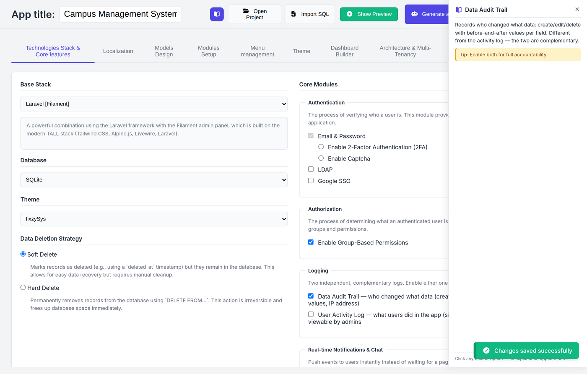
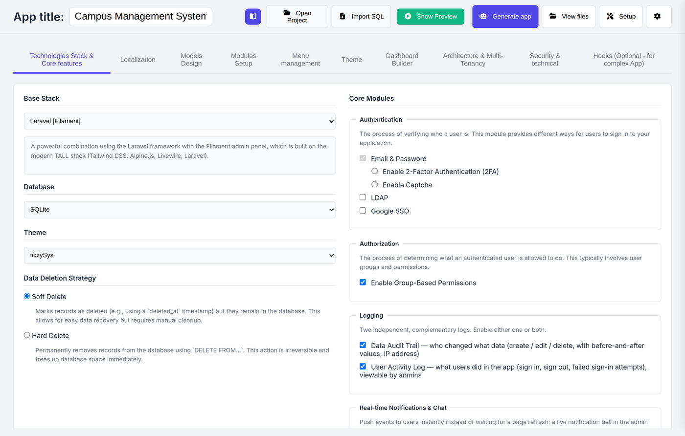
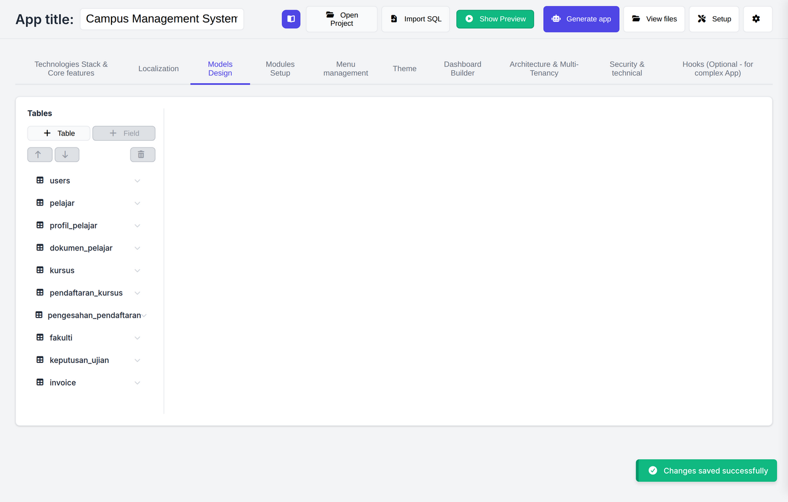
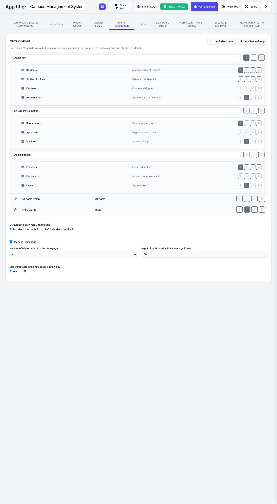
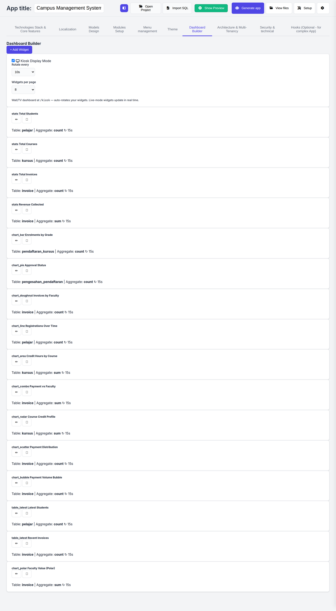
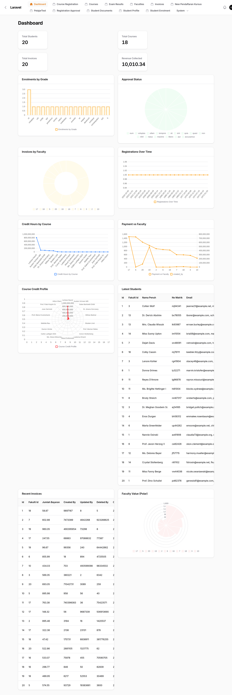
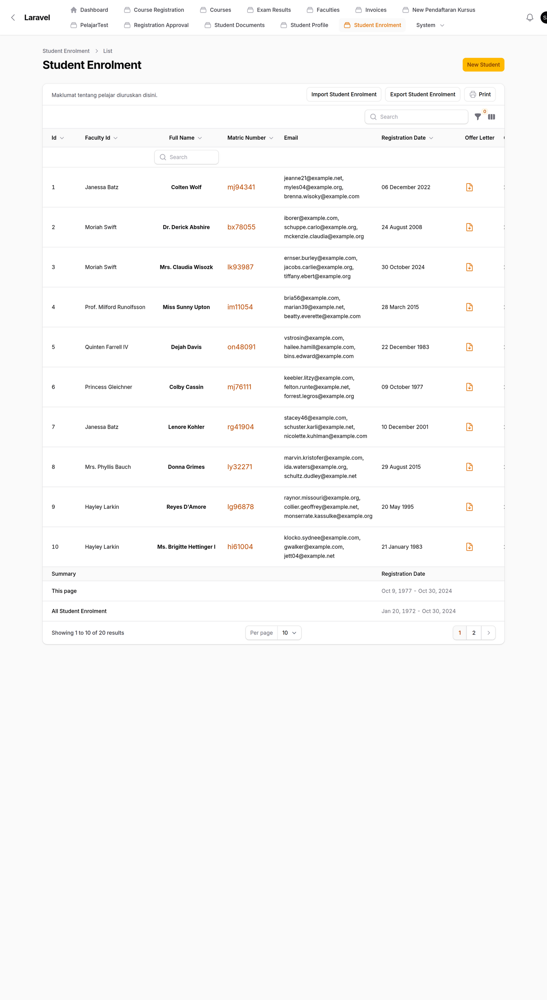
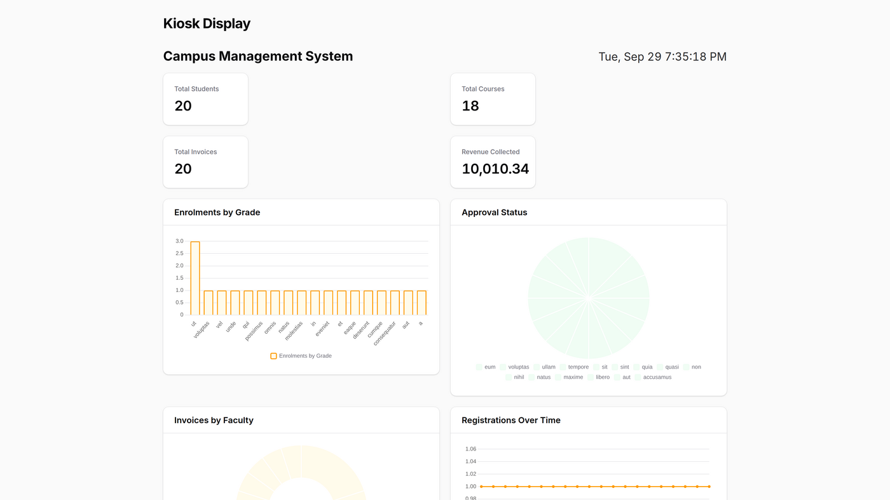
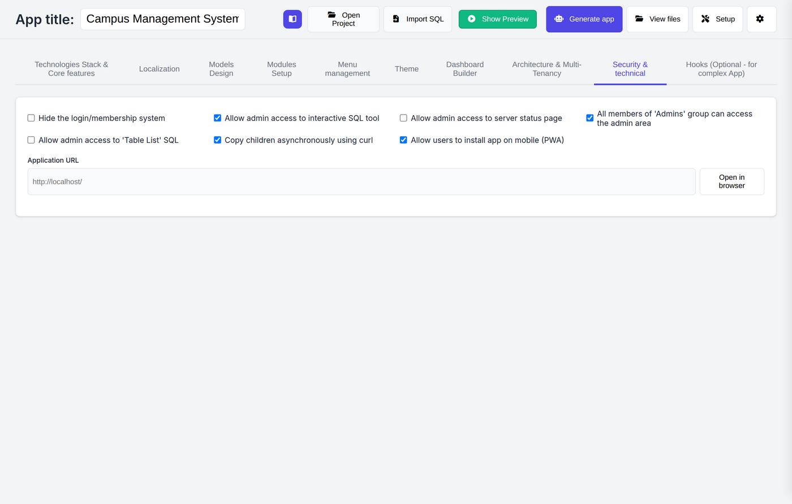

Fixzy SysMaker turns your visual schema into a complete Laravel + Filament system — migrations, models, resources, forms, imports, exports, realtime. Plain readable code you own. And an MCP server so Claude, Cursor & friends can drive the whole pipeline for you.

Your design lives in a stack-neutral intermediate representation. Every shell drives the exact same validated pipeline — no second-class interfaces.
Visual schema designer, dashboard builder, one-click setup wizard. Windows & macOS.
fixzy serve — the same designer over localhost, no install ceremony.
fixzy generate for CI pipelines and scripted builds. Deterministic output.
fixzy mcp — AI assistants design, validate and generate through your pipeline.
Register fixzy mcp once with Claude Desktop or Cursor. The assistant calls the same tools the GUI uses — every step validated, nothing free-written.
--allow-write / --allow-generate.One generation pass produces the whole Laravel + Filament application layer:
Every screen of the generator, from stack selection to the generated app itself. Click any field inside the studio and a contextual help panel explains it — no docs hunting.








Fixzy SysMaker is source-available under a non-commercial license: free for personal, educational, research, government and non-profit use. Commercial use is covered by an affordable license — and every generated file is yours to keep, forever.